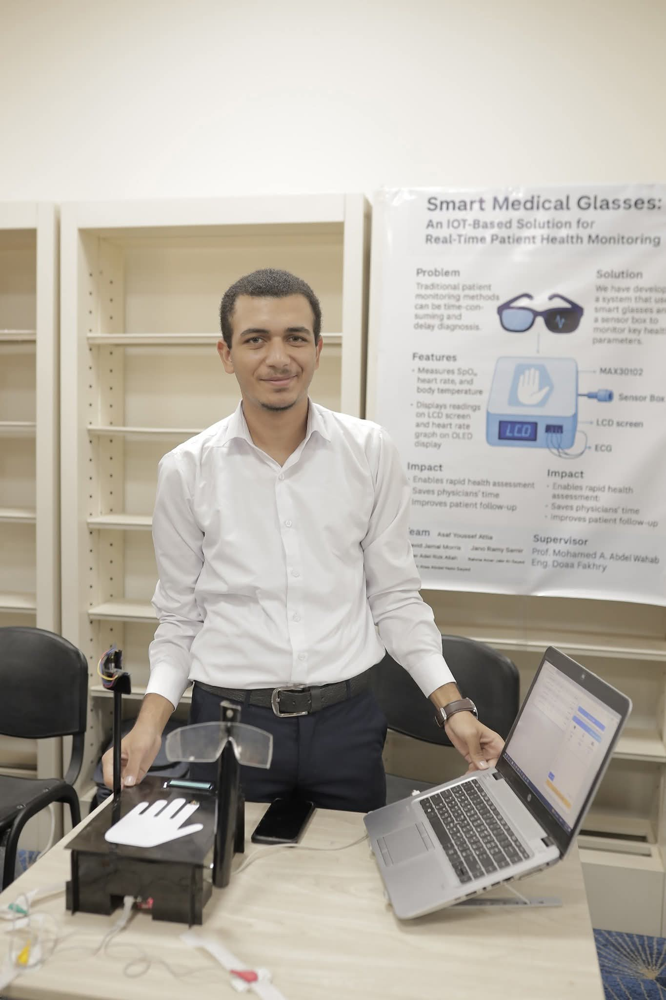
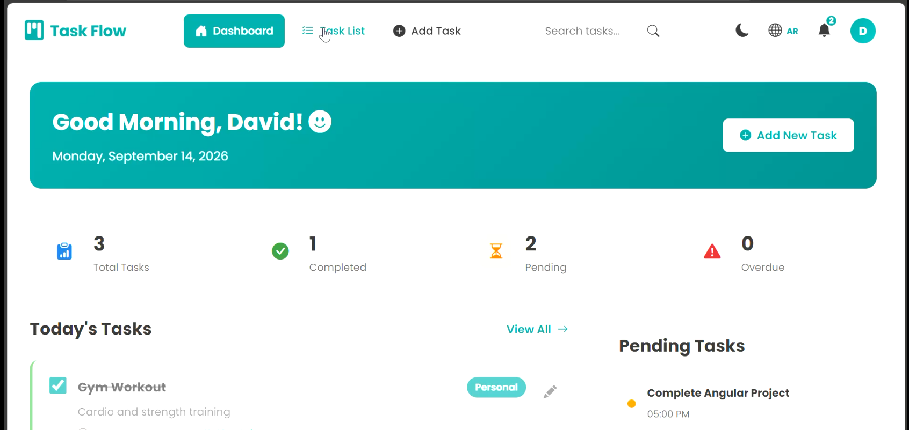
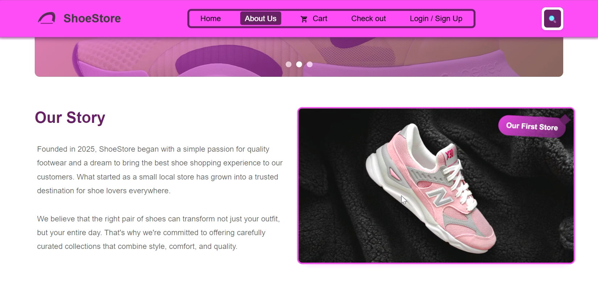
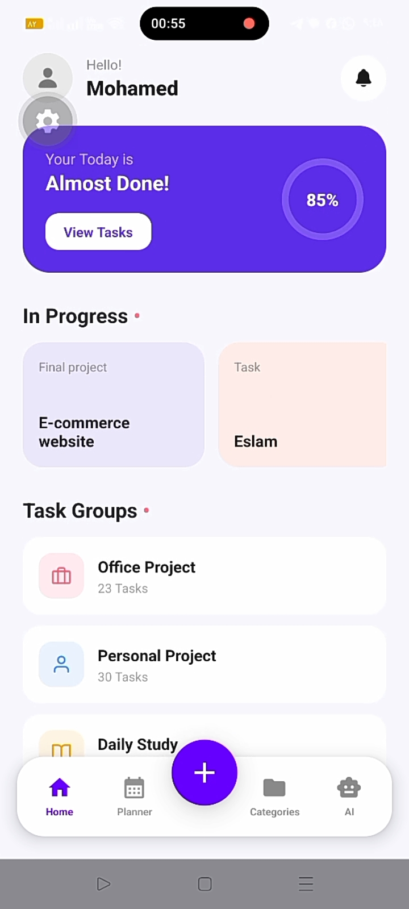

I build the two halves of a system that most people build separately: the hardware that reads the world, and the interface that makes sense of it.
I'm a junior web developer and IoT enthusiast with a strong foundation in web design, software development, and problem-solving. I like writing clean code and building small intelligent systems — usually a website and a piece of hardware talking to each other.
Since 2024 I've taken on freelance web design work through Freelancer, and spent my own time programming ESP32 and Arduino boards, wiring sensors, and building the databases and dashboards that display what they measure in real time.
I'm currently sizing up a bigger frontend project — a full SaaS-style dashboard with authentication and real data visualization — to push past the scale of what I've shipped so far.
Coursework in IT fundamentals, databases, networks, OOP, data structures, web design and software concepts. Standing: excellent so far.
Designed and built responsive, cross-browser, mobile-friendly websites for small freelance clients, end to end.
Programmed ESP32 and Arduino microcontrollers, connected sensors and actuators, and built the databases and web interfaces that display their readings live.
90 technical hours plus 30 freelancing-coaching hours, completed with a 100% score.
Trained on problem-solving contests, sharpening algorithmic thinking in C++ and Python.
A pair of smart glasses and a companion sensor box that take a patient's temperature, ECG and blood-oxygen reading in one pass, then push the results straight to a doctor's web dashboard in real time — built to make initial patient monitoring faster in places where every minute of triage counts.
Supervised by Eng. Duaa Ahmed Fakhry. Demonstrated at a university science exhibition to the Assiut Governor and the university president.

A bilingual task-management web app with grouped projects, colour-coded categories and a stats dashboard, built as a full MEAN-style stack rather than frontend-only.

A responsive shoe e-commerce frontend covering the full shopper flow, from browsing to an on-screen receipt.

A React Native app that helps students organise study schedules, with a daily and weekly planner view.
Open to freelance web work, internships, and IoT projects that need someone comfortable on both sides of the wire.